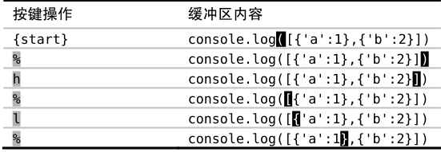
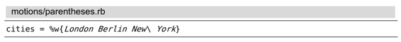
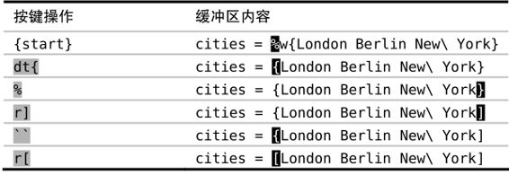
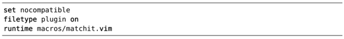
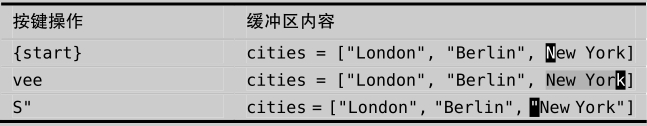

），它可作用于 ()、{}以及[]，如下例所示：
），它可作用于 ()、{}以及[]，如下例所示：技巧54在匹配括号间跳转
Vim 提供了一个动作命令，让我们可以在开、闭括号间跳转。在激活了 matchit.vim插件后，此命令也可以用于成对的 XML 标签，以及某些编程语言中的关键字上。
%命令允许我们在一组开、闭括号间跳转（参见:h %），它可作用于 ()、{}以及[]，如下例所示：

要知道怎样在实际工作中使用%，请看下面简短的 Ruby 代码：

假设我们想把 %w{London Berlin New\ York}改成普通的列表定义 ["London", "Berlin", "New York"]，因此要把大括号改成方括号。你或许会想这是用%动作的完美场合，你说对了，但这里有个陷阱！
假设我们先把光标移到开括号上，然后按r[把它改成了方括号。现在我们得到一个怪模怪样的结构[London Berlin New\ York}。由于%命令只能用在配对的括号上，所以现在我们无法用它跳到闭括号字符 } 上。
此处的窍门是在做修改之前，要先执行一次%命令。在执行%命令时，Vim 会自动为发生跳转的地方设置一个位置标记，而后我们就可以按``跳回那里。具体操作过程如下：

注意：在本例中，<C-o>命令也能完成``动作命令所做的工作（参见技巧55）。另外，也可以用surround.vim插件提供的一些命令，更容易地完成上面的工作，更多内容请见Surround.vim。
在配对的关键字间跳转
Vim 在发布时带了一个名为matchit 的插件，它增强了%命令的功能。激活此插件后，%命令就可以在配对的关键字间跳转。例如，在一个HTML文件里，用%命令可以在开标签和闭标签间跳转；在一个Ruby文件里，可以用它在配对的class/end、def/end，以及if/end间跳转。
虽然 matchit随 Vim一起发布，但它缺省并未使能。下面的 vimrc将使 Vim在启动时自动加载matchit插件：

此插件提供的增强功能非常有用，因此我建议你激活该插件，更多细节请查阅:h matchit-install。
Surround.vim
我最喜欢的一个插件是Tim Pope 写的surround.vim(5)，用它可以很容易地给选中的文本加分隔符。例如，我们可以这样把单词 New York 放在双引号里：

S"命令是surround.vim 提供的一个命令，可以把它解读为“用一对双引号把选中的文本括起来”（Surround the selection with a pair of double quote marks）。如果想把选中的文本用圆括号或花括号括起来，只需简单地用S)或S}即可。
我们也可以用surround.vim修改已有的分隔符。例如，我们可以用cs}]命令把{London}改成[London]，可以把它解读为“把周边的花括号{}改成方括号[]”（Change surrounding {} braces to [] brackets）。另外，我们也可以用cs]}实现相反的修改。这是个非常强大的插件，去看看吧。
(1) Home row指键盘上ASDFGHJKL 等字符所在的行，盲打时手指应始终停留在该行上。本书把“home row”译为“本位行”。——译者注
(2) http://www.catonmat.net/blog/why-vim-uses-hjkl-as-arrow-keys/
(3) off-by-one errors（本书译为“差一错误”）是一种逻辑错误。通常指在编程时，由于对边界条件判断错误，导致多循环一次或少循环一次的错误。——译者注
(4) Scrabble®游戏是一种英语文字图版游戏，依字母在英文单词出现的频率，给其赋予不同的分值。——译者注
(5) http://github.com/tpope/vim-surround